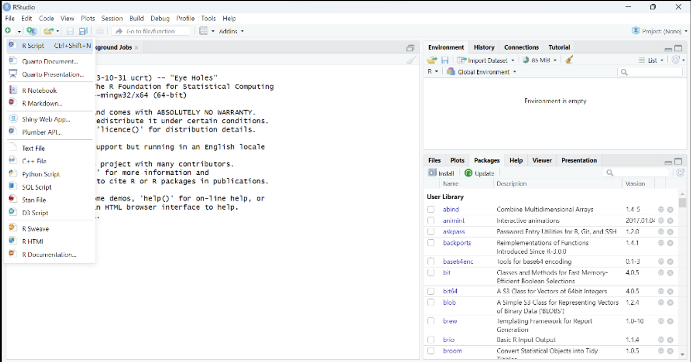
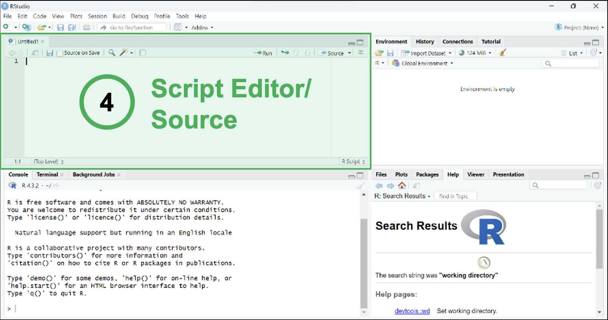
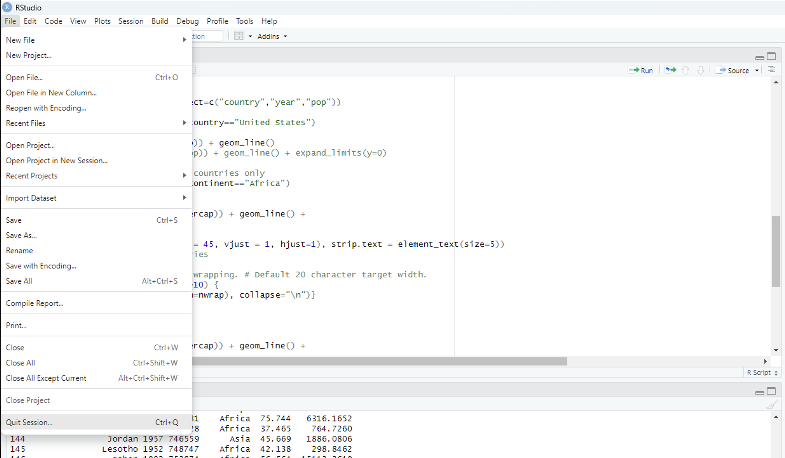

Dr. Gianluca Boo, WorldPop, University of Southampton
2025-09-17
RStudio has four main panes:
- Source Editor – write and save code
- Console – run commands interactively
- Environment/History – see and manage objects
- Files/Plots/Packages/Help/Viewer – tools and outputs
Script Editor
- Write, edit, and save code
- Organize analysis in reproducible scripts
- Prevent accidental execution before editing
Console
- Executes code immediately
- Use for quick checks and interactive testing
- Output and errors appear here
ℹ️ Best practice: write in the Script Editor, run via Console.
 
setwd("path")getwd()ℹ️ Try to run the code in your R Console and in the Script Editor.
[1] (index of first element).[2], [3], ... appear if output spans multiple lines.ℹ️ Try to run the code in your R Console and in the Script Editor.
In RStudio
ℹ️ Best practice: only load what you need.
<-.Naming tips
- ✅ Descriptive and concise
- ✅ Use underscores _ or periods .
- ❌ Avoid very long names
- ❌ Avoid existing function names
- ❌ No blank spaces
ℹ️ Try to run the code in your Script Editor.
Check type:
numbers <- c(1, 2, 3, 4, 5)
colors <- c("red", "green", "blue")
logical_values <- c(TRUE, FALSE, TRUE)Indexing with brackets:
Vectorized operations apply to all elements:
ℹ️ Try to run the code in your Script Editor.
matrix()rownames <- c("math", "science", "history", "English", "law")
colnames <- c("male", "female")
subject_matrix <- matrix(
c(10,9,11,13,12,18,17,13,6,5),
nrow = 5, ncol = 2, byrow = TRUE,
dimnames = list(rownames, colnames)
)rbind()cbind()ℹ️ Try to add a row to subject_matrix for geography <- c(4,2) using rbind in your Script Editor.
matrix_stats <- matrix(
c(4015,3980,3756,3333,4000,3000,2000,1000),
nrow = 4, ncol = 2, byrow = TRUE,
dimnames = list(
c("freshmen", "sophomores", "juniors", "seniors"),
c("enrollment", "living on campus")
)
)
df_stats <- as.data.frame(matrix_stats)
avg.grades <- c("A-","B+","B-","A+")
school_stats <- cbind(df_stats, avg.grades)ℹ️ Try to run the code in your Script Editor.
cats <- data.frame(
coat = c("Persian", "black", "tabby"),
weight = c(2.1, 5.0, 3.2),
likes_string = c(TRUE, FALSE, TRUE)
)
animal_sleep <- data.frame(
ranking = c(4, 1, 2, 3),
animal = c("koala", "capybara", "camel", "panda"),
country = c("Australia", "Brazil", "Egypt", "China"),
avg_sleep_hr = c(20, 3, 6, 12)
)ℹ️ Try to run the code in your Script Editor.
my_list <- list(
name = "Alice",
age = 25,
scores = c(90, 85, 92),
passed = TRUE
)
my_list$name
my_list[[2]]ℹ️ Try to run the code in your Script Editor.
Useful for structured multi-dimensional data. However, this is hardly used in most cases.
ℹ️ Try to run the code in your Script Editor.
Common formats
- Text: .txt (readLines() function)
- Tabular data: .csv, .tsv (read.table() function or read_csv() function from the readr package)
- Excel: .xlsx (xlsx package)
- Google sheets: (googlesheets package)
- Statistics program: SPSS, SAS (haven package)
- Databases: MySQL (RMySQL package)
Example:
➡️ Always use forward slashes / in file paths.
ℹ️ Try to run the code in your Script Editor.
.R scripts#Ctrl+S / Cmd+S*ℹ️ Try to save your script.
Options:
- File → Quit Session
- q() in Console

➡️ Do not save the workspace image. Always start fresh for reproducibility.
ℹ️ Try to close and reopen your R Session.
R Core Team. (2025). R: A Language and Environment for Statistical Computing. R Foundation for Statistical Computing, Vienna, Austria. https://www.R-project.org
The official reference for R itself, including installation, base functions, and documentation.
RStudio Team. (2025). RStudio: Integrated Development Environment for R. https://posit.co
Wickham, H., & Grolemund, G. (2017). R for Data Science: Import, Tidy, Transform, Visualize, and Model Data. O’Reilly Media. https://r4ds.had.co.nz
Venables, W. N., Smith, D. M., & the R Core Team. (2023). An Introduction to R. CRAN. https://cran.r-project.org/doc/manuals/r-release/R-intro.pdf
James, G., Witten, D., Hastie, T., & Tibshirani, R. (2021). An Introduction to Statistical Learning with Applications in R (2nd edition). Springer.